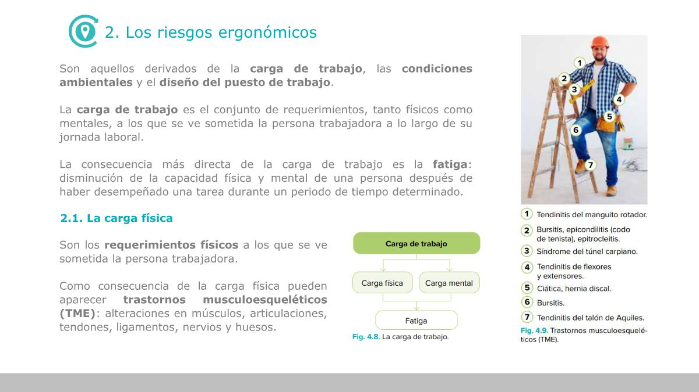
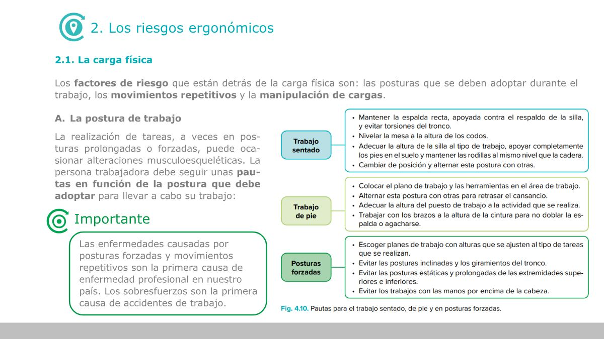
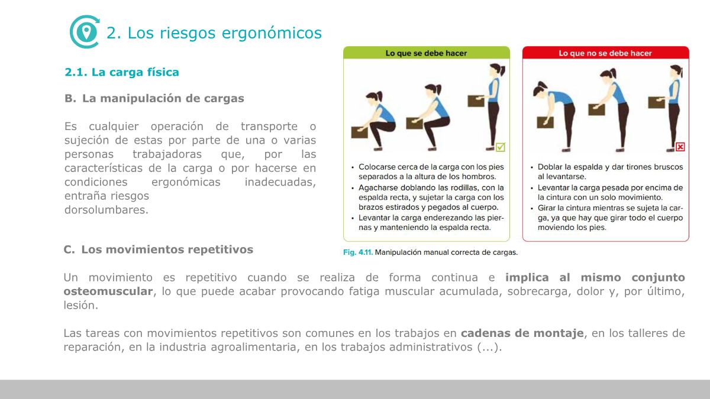
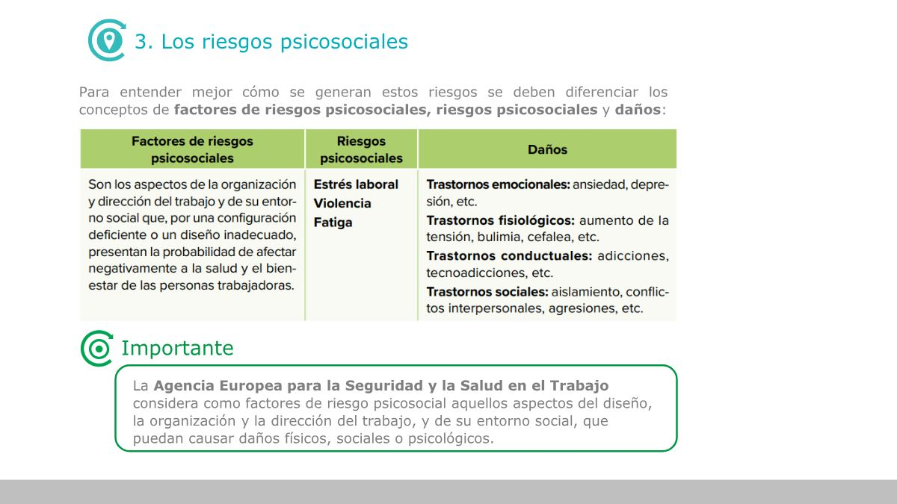
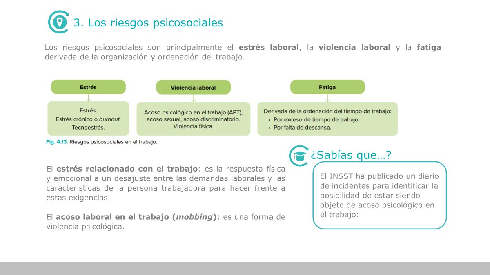
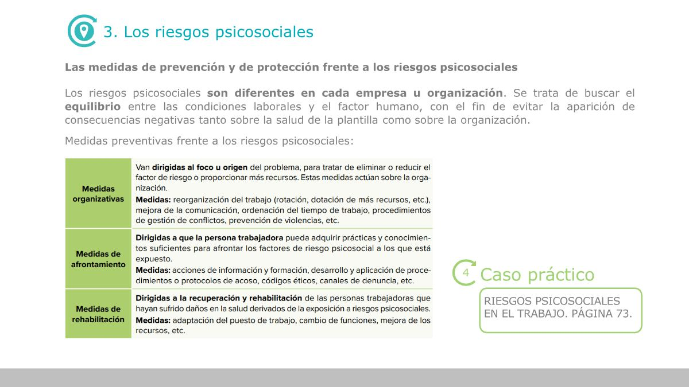

Lee lo de la profe, diapositiva a diapositiva · 20 min
Cierra y di en voz alta cada «Ponte a prueba» · 15 min
Haz las 7 preguntas del test sin mirar · 5 min
Resuelve los 2 casos antes de abrir la respuesta · 10 min
Pasa las tarjetas; repite las que fallaste · 10 min
Mañana, antes de entrar: solo la chuleta · 5 min
El tema en 1 minuto
2. Riesgos ergonómicos
Diapositivas 11–14
Vienen de la carga de trabajo, las condiciones ambientales y el diseño del puesto.
Carga de trabajo = física + mental → las dos llevan a la fatiga.
Carga física → TME. Sus factores: posturas, movimientos repetitivos y manipulación de cargas.
Carga mental → depende de cuánta información, lo complicada que es la respuesta y el tiempo para darla.
3. Riesgos psicosociales
Diapositivas 15–17
Vienen de la organización y dirección del trabajo y su entorno social.
Cadena: factor → riesgo → daño.
Los 3 riesgos: estrés (burnout, tecnoestrés), violencia (acoso, mobbing) y fatiga.
Las 3 medidas: organizativas, de afrontamiento y de rehabilitación.
Diapositiva a diapositiva
Tápalo, dilo en voz alta y toca para comprobar.
18
Riesgos ergonómicos, carga de trabajo y fatiga
Diapositiva 11 y vocabulario · imprescindible
Lo que dice la profe
Riesgos ergonómicos: son aquellos derivados de la carga de trabajo, las condiciones ambientales y el diseño del puesto de trabajo.
La carga de trabajo es el conjunto de requerimientos, tanto físicos como mentales, a los que se ve sometida la persona trabajadora a lo largo de su jornada laboral.
La consecuencia más directa de la carga de trabajo es la fatiga: disminución de la capacidad física y mental de una persona después de haber desempeñado una tarea durante un periodo de tiempo determinado.
Carga de trabajo: «Conjunto de requerimientos, tanto físicos como mentales, a los que se ve sometida la persona trabajadora a lo largo de su jornada laboral.»
Fatiga: El cansancio que baja tu capacidad después de trabajar un tiempo.
Entiéndelo: La carga de trabajo tiene dos partes, física y mental, y las dos acaban en lo mismo: fatiga.
Truco: Carga física + mental → fatiga.
Ponte a prueba: ¿De qué derivan los riesgos ergonómicos? Define carga de trabajo y fatiga.
19
La carga física y los TME
Diapositiva 11 y vocabulario · imprescindible
Lo que dice la profe
La carga física: son los requerimientos físicos a los que se ve sometida la persona trabajadora.
Como consecuencia de la carga física pueden aparecer trastornos musculoesqueléticos (TME): alteraciones en músculos, articulaciones, tendones, ligamentos, nervios y huesos.
Tendinitis del manguito rotador.
Bursitis, epicondilitis (codo de tenista), epitrocleitis.
Síndrome del túnel carpiano.
Tendinitis de flexores y extensores.
Ciática, hernia discal.
Bursitis.
Tendinitis del talón de Aquiles.
Carga física: «Son los requerimientos físicos a los que se ve sometida la persona trabajadora.»
TME: Trastornos musculoesqueléticos: lesiones de músculos, tendones, articulaciones, nervios y huesos.

Carga de trabajo y trastornos musculoesqueléticos (diap. 11)
Entiéndelo: Los TME son el «desgaste» del cuerpo por el trabajo: tendinitis, túnel carpiano, hernias…
Truco: TME ← carga física (pregunta 13 del test).
Ponte a prueba: ¿Qué es la carga física y qué consecuencia tiene? Di 3 ejemplos de TME.
20
La postura de trabajo
Diapositiva 12 · imprescindible
Lo que dice la profe
Los factores de riesgo que están detrás de la carga física son: las posturas que se deben adoptar durante el trabajo, los movimientos repetitivos y la manipulación de cargas.
La realización de tareas, a veces en posturas prolongadas o forzadas, puede ocasionar alteraciones musculoesqueléticas. La persona trabajadora debe seguir unas pautas en función de la postura que debe adoptar:
Trabajo sentado: mantener la espalda recta, apoyada contra el respaldo de la silla, y evitar torsiones del tronco; nivelar la mesa a la altura de los codos; adecuar la altura de la silla al tipo de trabajo, apoyar completamente los pies en el suelo y mantener las rodillas al mismo nivel que la cadera; cambiar de posición y alternar esta postura con otras.
Trabajo de pie: colocar el plano de trabajo y las herramientas en el área de trabajo; alternar esta postura con otras para retrasar el cansancio; adecuar la altura del puesto de trabajo a la actividad que se realiza; trabajar con los brazos a la altura de la cintura para no doblar la espalda o agacharse.
Posturas forzadas: evitar las posturas inclinadas y los giramientos del tronco; evitar las posturas estáticas y prolongadas de las extremidades superiores e inferiores; evitar los trabajos con las manos por encima de la cabeza.
Las enfermedades causadas por posturas forzadas y movimientos repetitivos son la primera causa de enfermedad profesional en nuestro país. Los sobresfuerzos son la primera causa de accidentes de trabajo.

Pautas para el trabajo sentado, de pie y en posturas forzadas (diap. 12)
Entiéndelo: La regla de oro de todas: cambiar de postura. Y que la mesa o el puesto se adapten a ti, no tú a ellos.
Truco: Factores de la carga física: «Postura, Repetir, Cargar». Posturas y repetición = 1.ª enfermedad profesional; sobresfuerzos = 1.º accidente.
Ponte a prueba: Di los 3 factores de riesgo de la carga física y las pautas para el trabajo sentado.
21
La manipulación de cargas
Diapositiva 13 · imprescindible
Lo que dice la profe
La manipulación de cargas: es cualquier operación de transporte o sujeción de estas por parte de una o varias personas trabajadoras que, por las características de la carga o por hacerse en condiciones ergonómicas inadecuadas, entraña riesgos dorsolumbares.
Lo que se debe hacer:
Colocarse cerca de la carga con los pies separados a la altura de los hombros.
Agacharse doblando las rodillas, con la espalda recta, y sujetar la carga con los brazos estirados y pegados al cuerpo.
Levantar la carga enderezando las piernas y manteniendo la espalda recta.
Lo que no se debe hacer:
Doblar la espalda y dar tirones bruscos al levantarse.
Levantar la carga pesada por encima de la cintura con un solo movimiento.
Girar la cintura mientras se sujeta la carga, ya que hay que girar todo el cuerpo moviendo los pies.
Dorsolumbar: De la espalda, sobre todo la parte baja (lumbares).

Manipulación manual correcta de cargas (diap. 13)
Entiéndelo: La fuerza la hacen las piernas, no la espalda: rodillas dobladas, espalda recta y la carga pegada al cuerpo.
Truco: «Cerca, Rodillas, Recta, Pegada». Y para girar, mueve los pies, no la cintura.
Ponte a prueba: Define manipulación de cargas. ¿Cómo se levanta bien una carga y qué no se debe hacer?
22
Los movimientos repetitivos
Diapositiva 13
Lo que dice la profe
Un movimiento es repetitivo cuando se realiza de forma continua e implica al mismo conjunto osteomuscular, lo que puede acabar provocando fatiga muscular acumulada, sobrecarga, dolor y, por último, lesión.
Las tareas con movimientos repetitivos son comunes en los trabajos en cadenas de montaje, en los talleres de reparación, en la industria agroalimentaria, en los trabajos administrativos (...).
Osteomuscular: De los huesos y los músculos.
Entiéndelo: No es un gran esfuerzo, sino el mismo pequeño gesto mil veces: fatiga, sobrecarga, dolor y lesión (como la tendinitis de muñeca de un montador).
Ponte a prueba: ¿Cuándo es repetitivo un movimiento, a qué puede llevar y en qué trabajos es común?
23
La carga mental
Diapositiva 14 y vocabulario · imprescindible
Lo que dice la profe
La carga mental es el nivel de actividad mental o de esfuerzo intelectual necesario para desarrollar el trabajo al que se ve sometida la persona trabajadora a lo largo de su jornada laboral.
Viene determinada por la relación que se establece entre las exigencias del trabajo (que dependen de la cantidad de información que se recibe, la complejidad de la respuesta que se requiere y el tiempo de respuesta que se tiene) y las características individuales de la persona que realiza la tarea, las condiciones ambientales del puesto de trabajo y factores psicosociales.
El principal efecto de la carga mental es la fatiga mental.
Carga mental: «Nivel de actividad mental o de esfuerzo intelectual necesario para desarrollar el trabajo al que se ve sometida la persona trabajadora a lo largo de su jornada laboral.»
Entiéndelo: Mucha información, respuestas complicadas y poco tiempo para darlas: así se llena la cabeza. Y no afecta igual a todo el mundo.
Truco: Exigencias: «Cuánta info, qué complicado, cuánto tiempo». La cantidad de información es carga mental, no física (pregunta 12 del test).
Ponte a prueba: Define carga mental. ¿De qué dependen las exigencias del trabajo y cuál es su principal efecto?
24
Factores de riesgo, riesgos y daños
Diapositiva 15 y vocabulario · imprescindible
Lo que dice la profe
Para entender mejor cómo se generan estos riesgos se deben diferenciar los conceptos de factores de riesgos psicosociales, riesgos psicosociales y daños:
Factores de riesgos psicosociales: son los aspectos de la organización y dirección del trabajo y de su entorno social que, por una configuración deficiente o un diseño inadecuado, presentan la probabilidad de afectar negativamente a la salud y el bienestar de las personas trabajadoras.
Daños: trastornos emocionales: ansiedad, depresión, etc. · trastornos fisiológicos: aumento de la tensión, bulimia, cefalea, etc. · trastornos conductuales: adicciones, tecnoadicciones, etc. · trastornos sociales: aislamiento, conflictos interpersonales, agresiones, etc.
La Agencia Europea para la Seguridad y la Salud en el Trabajo considera como factores de riesgo psicosocial aquellos aspectos del diseño, la organización y la dirección del trabajo, y de su entorno social, que puedan causar daños físicos, sociales o psicológicos.
Factores de riesgo psicosocial: «Aspectos de la Eª y dirección del trabajo y su entorno social que, por una configuración deficiente o un mal diseño, presentan la probabilidad de afectar negativamente a la salud y el bienestar de las personas.»

Factores de riesgo, riesgos psicosociales y daños (diap. 15)
Entiéndelo: Es una cadena: un factor (un jefe que critica a diario, horarios eternos) → un riesgo (estrés) → un daño (ansiedad, no dormir).
Truco: «Factor → Riesgo → Daño». Psicosociales = organización del trabajo (preguntas 14 y 15 del test).
Ponte a prueba: Diferencia factor de riesgo psicosocial, riesgo psicosocial y daño, con un ejemplo de cada uno.
25
Estrés, violencia y fatiga
Diapositiva 16 y vocabulario · imprescindible
Lo que dice la profe
Los riesgos psicosociales son principalmente el estrés laboral, la violencia laboral y la fatiga derivada de la organización y ordenación del trabajo.
Estrés: estrés; estrés crónico o burnout; tecnoestrés.
Violencia laboral: acoso psicológico en el trabajo (APT), acoso sexual, acoso discriminatorio; violencia física.
Fatiga: derivada de la ordenación del tiempo de trabajo: por exceso de tiempo de trabajo; por falta de descanso.
El estrés relacionado con el trabajo: es la respuesta física y emocional a un desajuste entre las demandas laborales y las características de la persona trabajadora para hacer frente a estas exigencias.
El acoso laboral en el trabajo (mobbing): es una forma de violencia psicológica. Acoso laboral: ejercicio de violencia psicológica extrema infligida por una o más personas sobre otra, en el ámbito laboral, respecto de la que existe una relación asimétrica* de poder. (desigual, otro estatus…)
Estrés relacionado con el trabajo: «Respuesta física y emocional a un desajuste entre las demandas laborales y las características de la persona trabajadora para hacer frente a estas exigencias.»
Acoso laboral: «Ejercicio de violencia psicológica extrema infligida por una o más personas sobre otra, en el ámbito laboral, respecto de la que existe una relación asimétrica* de poder.»
Burnout: Estrés crónico: el «síndrome del quemado».

Riesgos psicosociales en el trabajo (diap. 16)
Entiéndelo: El acoso no tiene que ser de jefe a empleado: basta con que una parte tenga más poder (relación asimétrica). Y el burnout es estrés que se ha hecho crónico.
Truco: Burnout = estrés · mobbing = violencia · asimétrica = desigual (preguntas 16, 17 y 18 del test).
Ponte a prueba: ¿Cuáles son los 3 riesgos psicosociales principales? Define estrés laboral y acoso laboral.
26
Medidas frente a los riesgos psicosociales
Diapositiva 17 · imprescindible
Lo que dice la profe
Los riesgos psicosociales son diferentes en cada empresa u organización. Se trata de buscar el equilibrio entre las condiciones laborales y el factor humano, con el fin de evitar la aparición de consecuencias negativas tanto sobre la salud de la plantilla como sobre la organización.
Medidas organizativas: van dirigidas al foco u origen del problema, para tratar de eliminar o reducir el factor de riesgo o proporcionar más recursos. Estas medidas actúan sobre la organización. Medidas: reorganización del trabajo (rotación, dotación de más recursos, etc.), mejora de la comunicación, ordenación del tiempo de trabajo, procedimientos de gestión de conflictos, prevención de violencias, etc.
Medidas de afrontamiento: dirigidas a que la persona trabajadora pueda adquirir prácticas y conocimientos suficientes para afrontar los factores de riesgo psicosocial a los que está expuesto. Medidas: acciones de información y formación, desarrollo y aplicación de procedimientos o protocolos de acoso, códigos éticos, canales de denuncia, etc.
Medidas de rehabilitación: dirigidas a la recuperación y rehabilitación de las personas trabajadoras que hayan sufrido daños en la salud derivados de la exposición a riesgos psicosociales. Medidas: adaptación del puesto de trabajo, cambio de funciones, mejora de los recursos, etc.

Medidas preventivas frente a los riesgos psicosociales (diap. 17)
Entiéndelo: Antes (cambiar la organización), durante (dar herramientas a la persona) y después (ayudar a recuperarse a quien ya está dañado).
Ponte a prueba: Di los 3 tipos de medidas frente a los riesgos psicosociales, a quién se dirigen y un ejemplo de cada uno.
Test de la profe (preguntas 12 a 18)
Piensa la respuesta antes de abrir.
12. No es un factor de la carga física
b) La cantidad de información que se maneja: es carga mental.
13. Los TME son consecuencia de…
a) La carga física de trabajo.
14. No son riesgos ergonómicos los derivados de…
c) La organización del trabajo: eso es psicosocial.
15. Los riesgos psicosociales se deben principalmente a…
c) La organización del trabajo.
16. El acoso laboral es…
c) Un tipo de violencia en el trabajo.
17. El burnout es…
a) Una forma de estrés (estrés crónico).
18. El acoso laboral se ejerce…
c) Siempre que haya una relación asimétrica de poder.
Casos de las actividades
Actividad 8 · Jaime, montador de muebles
Diapositivas 13
Jaime trabaja como montador de muebles. Últimamente tiene dolores en las muñecas y le han diagnosticado tendinitis. Indica la causa que puede haber provocado la lesión y propón alguna medida preventiva.
Ver la respuesta modelo
Causa: los movimientos repetitivos (diapositiva 13): el mismo gesto, continuo, con el mismo conjunto osteomuscular (la muñeca). La escalera es fatiga → sobrecarga → dolor → lesión; la tendinitis es un TME, consecuencia de la carga física.
Medida: la diapositiva no da medidas propias de los movimientos repetitivos. Razónalo con la pauta de la diapositiva 12: cambiar de posición y alternar la tarea con otras, para no repetir siempre el mismo gesto con la misma muñeca.
Actividad 9 · Valery y Gabriel
Diapositivas 15 y 16
a) Valery, desde que cambió de jefe, siente una gran ansiedad: todos los días recibe un correo de su superior criticando su trabajo. b) Gabriel, gestor de incidencias, tiene horarios muy amplios, mucha intensidad, llamadas, correos, wasaps y SMS y clientes difíciles; no duerme bien y se enfada con su familia. Identifica los riesgos y los factores que influyen.
Ver la respuesta modelo
Valery: riesgo de violencia laboral, en concreto acoso psicológico (mobbing), porque hay una relación asimétrica de poder con su jefe. El daño es un trastorno emocional (ansiedad).
Gabriel: riesgo de estrés laboral (y tecnoestrés, por la avalancha de canales) y de fatiga por exceso de tiempo de trabajo. Factores: la organización y ordenación del trabajo (horarios, intensidad). Daños: fisiológicos (no duerme) y sociales (conflictos con la familia).
Respuestas modelo de Enfoque, hechas solo con lo que dicen las diapositivas.
Tarjetas
Dilo antes de abrir. Las que falles, repítelas al final.
¿De qué derivan los riesgos ergonómicos? Define carga de trabajo y fatiga.
Riesgos ergonómicos: son aquellos derivados de la carga de trabajo, las condiciones ambientales y el diseño del puesto de trabajo.
La carga de trabajo es el conjunto de requerimientos, tanto físicos como mentales, a los que se ve sometida la persona trabajadora a lo largo de su jornada laboral.
La consecuencia más directa de la carga de trabajo es la fatiga: disminución de la capacidad física y mental de una persona después de haber desempeñado una tarea durante un periodo de tiempo determinado.
¿Cómo define la diapositiva: «Carga de trabajo»?
«Conjunto de requerimientos, tanto físicos como mentales, a los que se ve sometida la persona trabajadora a lo largo de su jornada laboral.»
¿Qué es la carga física y qué consecuencia tiene? Di 3 ejemplos de TME.
La carga física: son los requerimientos físicos a los que se ve sometida la persona trabajadora.
Como consecuencia de la carga física pueden aparecer trastornos musculoesqueléticos (TME): alteraciones en músculos, articulaciones, tendones, ligamentos, nervios y huesos.
Tendinitis del manguito rotador.
Bursitis, epicondilitis (codo de tenista), epitrocleitis.
Síndrome del túnel carpiano.
Tendinitis de flexores y extensores.
Ciática, hernia discal.
Bursitis.
Tendinitis del talón de Aquiles.
¿Cómo define la diapositiva: «Carga física»?
«Son los requerimientos físicos a los que se ve sometida la persona trabajadora.»
Di los 3 factores de riesgo de la carga física y las pautas para el trabajo sentado.
Los factores de riesgo que están detrás de la carga física son: las posturas que se deben adoptar durante el trabajo, los movimientos repetitivos y la manipulación de cargas.
La realización de tareas, a veces en posturas prolongadas o forzadas, puede ocasionar alteraciones musculoesqueléticas. La persona trabajadora debe seguir unas pautas en función de la postura que debe adoptar:
Trabajo sentado: mantener la espalda recta, apoyada contra el respaldo de la silla, y evitar torsiones del tronco; nivelar la mesa a la altura de los codos; adecuar la altura de la silla al tipo de trabajo, apoyar completamente los pies en el suelo y mantener las rodillas al mismo nivel que la cadera; cambiar de posición y alternar esta postura con otras.
Trabajo de pie: colocar el plano de trabajo y las herramientas en el área de trabajo; alternar esta postura con otras para retrasar el cansancio; adecuar la altura del puesto de trabajo a la actividad que se realiza; trabajar con los brazos a la altura de la cintura para no doblar la espalda o agacharse.
Posturas forzadas: evitar las posturas inclinadas y los giramientos del tronco; evitar las posturas estáticas y prolongadas de las extremidades superiores e inferiores; evitar los trabajos con las manos por encima de la cabeza.
Las enfermedades causadas por posturas forzadas y movimientos repetitivos son la primera causa de enfermedad profesional en nuestro país. Los sobresfuerzos son la primera causa de accidentes de trabajo.
Define manipulación de cargas. ¿Cómo se levanta bien una carga y qué no se debe hacer?
La manipulación de cargas: es cualquier operación de transporte o sujeción de estas por parte de una o varias personas trabajadoras que, por las características de la carga o por hacerse en condiciones ergonómicas inadecuadas, entraña riesgos dorsolumbares.
Lo que se debe hacer:
Colocarse cerca de la carga con los pies separados a la altura de los hombros.
Agacharse doblando las rodillas, con la espalda recta, y sujetar la carga con los brazos estirados y pegados al cuerpo.
Levantar la carga enderezando las piernas y manteniendo la espalda recta.
Lo que no se debe hacer:
Doblar la espalda y dar tirones bruscos al levantarse.
Levantar la carga pesada por encima de la cintura con un solo movimiento.
Girar la cintura mientras se sujeta la carga, ya que hay que girar todo el cuerpo moviendo los pies.
¿Cuándo es repetitivo un movimiento, a qué puede llevar y en qué trabajos es común?
Un movimiento es repetitivo cuando se realiza de forma continua e implica al mismo conjunto osteomuscular, lo que puede acabar provocando fatiga muscular acumulada, sobrecarga, dolor y, por último, lesión.
Las tareas con movimientos repetitivos son comunes en los trabajos en cadenas de montaje, en los talleres de reparación, en la industria agroalimentaria, en los trabajos administrativos (...).
Define carga mental. ¿De qué dependen las exigencias del trabajo y cuál es su principal efecto?
La carga mental es el nivel de actividad mental o de esfuerzo intelectual necesario para desarrollar el trabajo al que se ve sometida la persona trabajadora a lo largo de su jornada laboral.
Viene determinada por la relación que se establece entre las exigencias del trabajo (que dependen de la cantidad de información que se recibe, la complejidad de la respuesta que se requiere y el tiempo de respuesta que se tiene) y las características individuales de la persona que realiza la tarea, las condiciones ambientales del puesto de trabajo y factores psicosociales.
El principal efecto de la carga mental es la fatiga mental.
¿Cómo define la diapositiva: «Carga mental»?
«Nivel de actividad mental o de esfuerzo intelectual necesario para desarrollar el trabajo al que se ve sometida la persona trabajadora a lo largo de su jornada laboral.»
Diferencia factor de riesgo psicosocial, riesgo psicosocial y daño, con un ejemplo de cada uno.
Para entender mejor cómo se generan estos riesgos se deben diferenciar los conceptos de factores de riesgos psicosociales, riesgos psicosociales y daños:
Factores de riesgos psicosociales: son los aspectos de la organización y dirección del trabajo y de su entorno social que, por una configuración deficiente o un diseño inadecuado, presentan la probabilidad de afectar negativamente a la salud y el bienestar de las personas trabajadoras.
Daños: trastornos emocionales: ansiedad, depresión, etc. · trastornos fisiológicos: aumento de la tensión, bulimia, cefalea, etc. · trastornos conductuales: adicciones, tecnoadicciones, etc. · trastornos sociales: aislamiento, conflictos interpersonales, agresiones, etc.
La Agencia Europea para la Seguridad y la Salud en el Trabajo considera como factores de riesgo psicosocial aquellos aspectos del diseño, la organización y la dirección del trabajo, y de su entorno social, que puedan causar daños físicos, sociales o psicológicos.
¿Cómo define la diapositiva: «Factores de riesgo psicosocial»?
«Aspectos de la Eª y dirección del trabajo y su entorno social que, por una configuración deficiente o un mal diseño, presentan la probabilidad de afectar negativamente a la salud y el bienestar de las personas.»
¿Cuáles son los 3 riesgos psicosociales principales? Define estrés laboral y acoso laboral.
Los riesgos psicosociales son principalmente el estrés laboral, la violencia laboral y la fatiga derivada de la organización y ordenación del trabajo.
Estrés: estrés; estrés crónico o burnout; tecnoestrés.
Violencia laboral: acoso psicológico en el trabajo (APT), acoso sexual, acoso discriminatorio; violencia física.
Fatiga: derivada de la ordenación del tiempo de trabajo: por exceso de tiempo de trabajo; por falta de descanso.
El estrés relacionado con el trabajo: es la respuesta física y emocional a un desajuste entre las demandas laborales y las características de la persona trabajadora para hacer frente a estas exigencias.
El acoso laboral en el trabajo (mobbing): es una forma de violencia psicológica. Acoso laboral: ejercicio de violencia psicológica extrema infligida por una o más personas sobre otra, en el ámbito laboral, respecto de la que existe una relación asimétrica* de poder. (desigual, otro estatus…)
¿Cómo define la diapositiva: «Estrés relacionado con el trabajo»?
«Respuesta física y emocional a un desajuste entre las demandas laborales y las características de la persona trabajadora para hacer frente a estas exigencias.»
¿Cómo define la diapositiva: «Acoso laboral»?
«Ejercicio de violencia psicológica extrema infligida por una o más personas sobre otra, en el ámbito laboral, respecto de la que existe una relación asimétrica* de poder.»
Di los 3 tipos de medidas frente a los riesgos psicosociales, a quién se dirigen y un ejemplo de cada uno.
Los riesgos psicosociales son diferentes en cada empresa u organización. Se trata de buscar el equilibrio entre las condiciones laborales y el factor humano, con el fin de evitar la aparición de consecuencias negativas tanto sobre la salud de la plantilla como sobre la organización.
Medidas organizativas: van dirigidas al foco u origen del problema, para tratar de eliminar o reducir el factor de riesgo o proporcionar más recursos. Estas medidas actúan sobre la organización. Medidas: reorganización del trabajo (rotación, dotación de más recursos, etc.), mejora de la comunicación, ordenación del tiempo de trabajo, procedimientos de gestión de conflictos, prevención de violencias, etc.
Medidas de afrontamiento: dirigidas a que la persona trabajadora pueda adquirir prácticas y conocimientos suficientes para afrontar los factores de riesgo psicosocial a los que está expuesto. Medidas: acciones de información y formación, desarrollo y aplicación de procedimientos o protocolos de acoso, códigos éticos, canales de denuncia, etc.
Medidas de rehabilitación: dirigidas a la recuperación y rehabilitación de las personas trabajadoras que hayan sufrido daños en la salud derivados de la exposición a riesgos psicosociales. Medidas: adaptación del puesto de trabajo, cambio de funciones, mejora de los recursos, etc.
Chuleta para mañana
Carga física + mental → fatiga.
TME ← carga física (test 13).
Factores de la carga física: «Postura, Repetir, Cargar».
Cargas: «Cerca, Rodillas, Recta, Pegada»; para girar, mueve los pies.